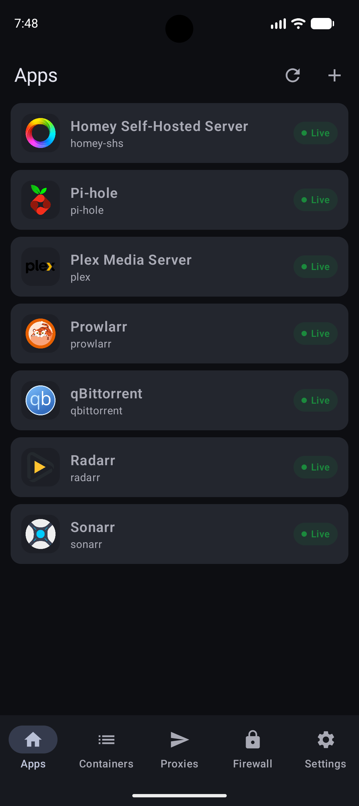
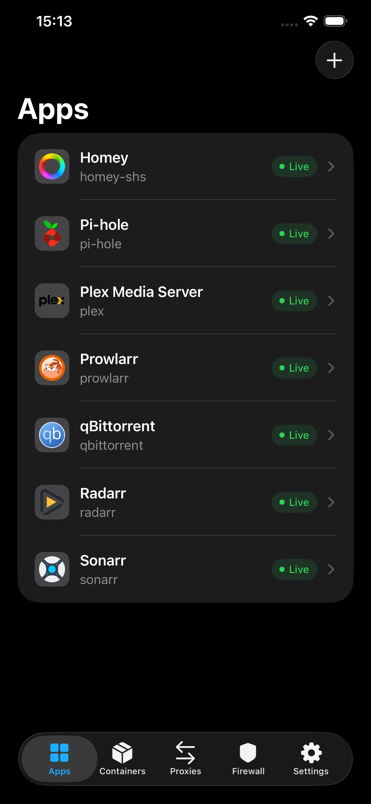

A secure address for every app
Reach Plex, Sonarr, and every other service on its own subdomain. HTTPS is configured automatically. Install new apps from the extensive apps registry. All the hard parameters are automatically filled!
Containarr manages, updates, and securely publishes all your Docker containers from one place. Open source, and free forever.

Containarr takes care of the repetitive infrastructure so your apps just work.
Reach Plex, Sonarr, and every other service on its own subdomain. HTTPS is configured automatically. Install new apps from the extensive apps registry. All the hard parameters are automatically filled!
Install, configure, run, and update containers from a polished interface designed for desktop and mobile.
Point one wildcard CNAME at Containarr. Your domain keeps following your home IP automatically.
Make services public, keep them on your LAN, or restrict access to specific IP addresses and networks.
Automatically update containers, or choose to update manually when a new version is available.
Manage your apps, containers, proxies, and firewall from your iPhone or Android phone.


All you need is a Linux host—such as a Raspberry Pi—with ports 80 and 443 available.
If Docker is not on your server yet, install it and add your user to the Docker group.
curl -sSL https://get.docker.com | sh
sudo usermod -aG docker $(whoami)
exitLog in again after running these commands.
Start the latest release on your host network.
docker run -d \
--name=containarr \
--network=host \
-v ~/.containarr/:/data/ \
-v /var/run/docker.sock:/var/run/docker.sock \
--restart unless-stopped \
ghcr.io/containarr/containarr:latestYour settings are saved in ~/.containarr.
Visit http://localhost to finish setup and run your first
container.